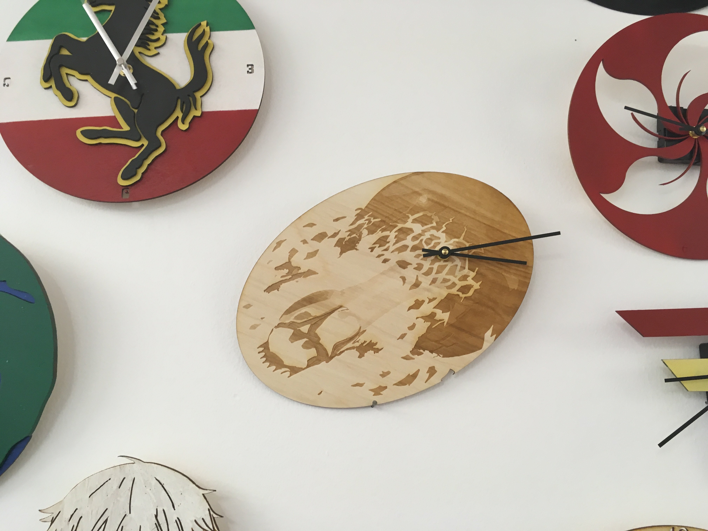

Laser Cutting and Woodshop
20 - 27 September 2018
This week, we used the laser engraver to create four different projects. We created clocks, press fit kits, a choice project, and
water bottles. As with the printers last week, we used CorelDRAW to create our projects. The most important thing you will learn
from my projects this week, if you had not already picked up on this from previous weeks, is that I am a nerd.

Assignment 1: Clock
We created clocks to be hung on the wall of the Makerspace. The only requirements were that it be original and compatible with
a specific clock kit we had.

Because I love to listen to 80s music, and one of my favorite 80s bands is Journey, I decided to try to make a clock out of one
of their most iconic album covers, Escape. Because I was not especially familiar with CorelDRAW's Trace Bitmap tool when I first
started on this project, I had to restart several times before I finally figured out exactly how to make my clock look like I
wanted it to.

Before I put my image into CorelDRAW, I used another application to convert it to grayscale, then I put that grayscale image into
CorelDRAW and traced the bitmap. From there, I had to go through and decide which parts of the bitmap I actually wanted to engrave
and which parts I wanted to remove. I decided to remove all the letters and background, leaving only the iconic orb and scarab beetle
in my clock. I also didn't want my clock to be super dark everywhere, so I removed as much of the background as I could. This took a
lot of time, because I had to go through every one of the almost 300 "curves," as CorelDRAW labels them, in the bitmap of my image.
Once I accomplished that, though, I was ready to laser engrave.

I am very satisfied with how my clock turned out. Because of my inexperience with CorelDRAW, I honestly did not expect my clock
to turn out so well, so when I saw the final product and how much it really looked like my original image, despite the background
being edited out, I was very pleased. If I were to do this project again, I would not change anything. I would just be faster in
creating my clock, because of all my new experience with CorelDRAW.

Clock CorelDRAW File
Assignment 2: Press Fit Kits
"What is a press fit kit?" you ask. "Well," I tell you, "it is a collection of shapes that fit together by means of slits and which
do not fall apart because those slits are tight enough that friction holds the pieces in place.
We had to create press fit kits out of at least three different shapes. Because I am a nerd, I created a kit with 6 different shapes
and 9 different pieces and I named it the Fellowship of the Shapes.

Creating these shapes was pretty easy. I made the 9 shapes on CorelDRAW, each approximately the same size, with my hexagon and
pentagons slightly smaller because they represented my dwarf and my hobbits. I used a caliper to measure the thickness of my
cardboard, and then created slits in my shapes of that width, so that my shapes would fit together.


Finally, I found grayscale
images of my 9 characters, converted them to bitmaps using CorelDRAW, and put them on their respective shapes. from there, I was
ready to print.


My shapes turned out very well. They all stuck together correctly, and I was very proud of my nerdiness when I was finished.
The only thing I would change would be that some of my images turned out strangely because my images were so dark that the
laser cut through the top layer of cardboard, which made my image look very strange, but other than brightening up some of my
images to solve that problem, there is nothing I would change if I were to make this again.